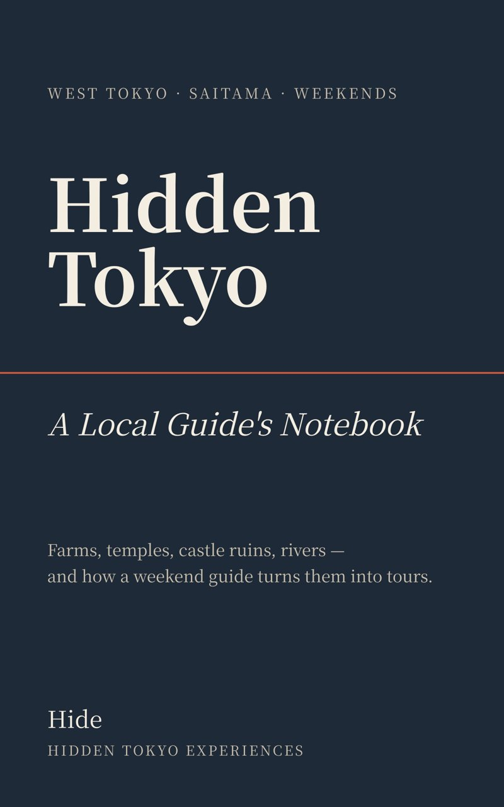

I Wrote a Short Book About Running Tours on Weekends

For most of this year I have been guiding small groups around the western edge of Tokyo and just over the border in Saitama, on Saturdays and Sundays. Alongside the tours I kept a notebook: how a walk becomes something you can book, what guests actually ask, the tour I stopped selling, the morning nobody came.
That notebook is now a short book. Here is how it begins, in full.
Prologue: Not Asakusa
In my day job I sometimes have to show foreign visitors around Tokyo, and every time I hesitate a little before choosing where.
Asakusa is crowded. Shibuya is crowded. Both have, over the years, turned into something built for being photographed. I don't blame them. I just notice that I am never quite comfortable walking someone from another country into the middle of it and saying, this is where I'm from.
When I travel, I don't go to the famous places either. I go to markets. Food stalls. Wherever local people are doing something ordinary.
I lived in Bangkok for a while, and on weekends I went to the local markets. They were not hygienic, if I'm honest. Nobody stopped smiling. I would negotiate a price with a woman at a stall using my hands, take a plastic chair, and eat a plate of gapao rice, which is minced pork or chicken fried with holy basil and chilli, usually with a fried egg on top. In Chiang Mai, in the north, I ate street food at a night market standing among people who lived there. That was what I thought travel was. Not the bus tour past the landmarks, but the moment you touch somebody's ordinary day.
Then I came back to Tokyo and looked at it again.
It is clean. People are kind. The vegetables are good, and I only really noticed that after I started renting a plot in a shared allotment, the kind where the city or a farm divides a field into small rented squares for people with desk jobs. The man in the next plot taught me how to grow tomatoes. I grew them. They were better than the ones from the supermarket, by a distance that was a little embarrassing.
I remember thinking: if I showed this to a foreigner, they would love it.
That is the whole reason. I had a plot, a tomato, and a sentence in my head.
I began guiding on GetYourGuide, a website where travellers book local tours, working weekends only because the other five days belong to the office. The routes were the ones I would have liked to be taken on myself: the Totoro forest and Lake Sayama, a fermentation park and a sake brewery in Hanno, Shakujii Park and a bowl of Musashino udon. They are all places where local people go on a normal Saturday.
When I wrote this down for the first time, in June, it had been going for a short while. One or two bookings a month.
What the rest of the book covers
The book follows the tours from the first idea to the Saturdays. Part One is about making a tour: a soba shop that is closed on Sundays, four calendars that all have to agree, a listing that says five hours when it almost never is. Part Two is about selling it, including what it feels like to ask a stranger to vouch for you in a review.

Part Three is the places: Heirinji, the Zen temple whose forest is protected like a building, and the brewery in Hanno that is a twenty-minute walk from the station, not the taxi ride I once assumed. Part Four is the machinery behind a one-person business. Part Five is Saturdays when the plan fell through, a river with no good story, and the man who took both castles.

At the back there is a getting-there guide to all ten places in the book: the nearest station, the travel time from Ikebukuro, opening days, prices and the best season to go. The information was checked in November 2026, so you can use the book to visit these places on your own.
The ebook is $4.99 and comes as EPUB and PDF. Get Hidden Tokyo: A Local Guide's Notebook. If you would rather walk these places than read about them, I guide them in small groups of up to 4 guests: see the tours.